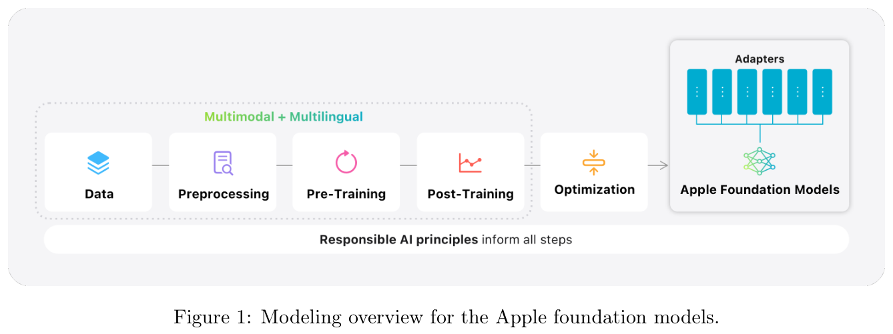
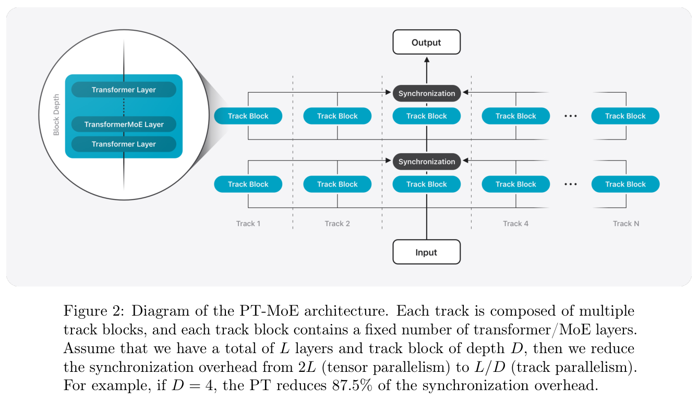
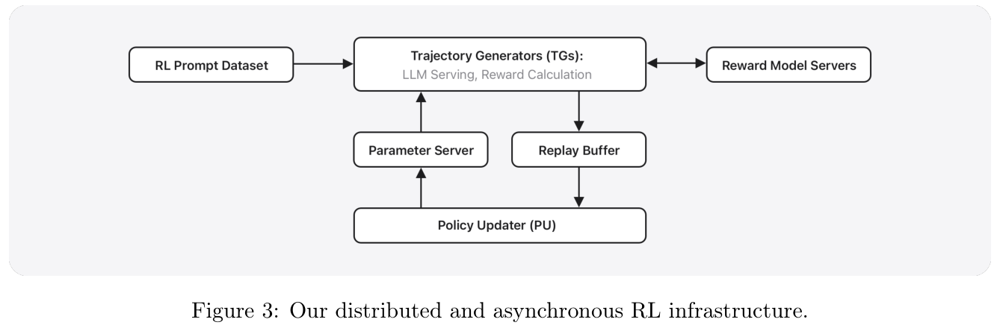
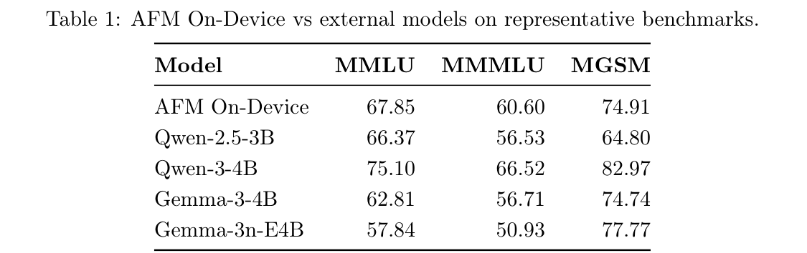
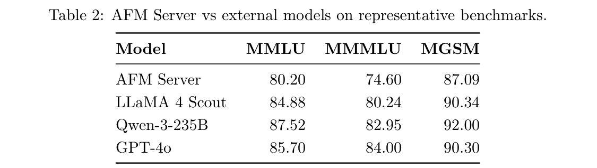
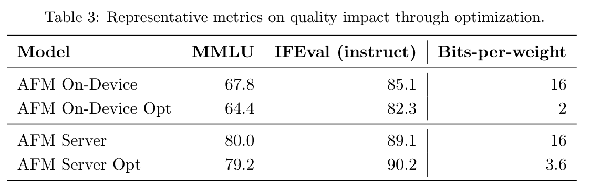
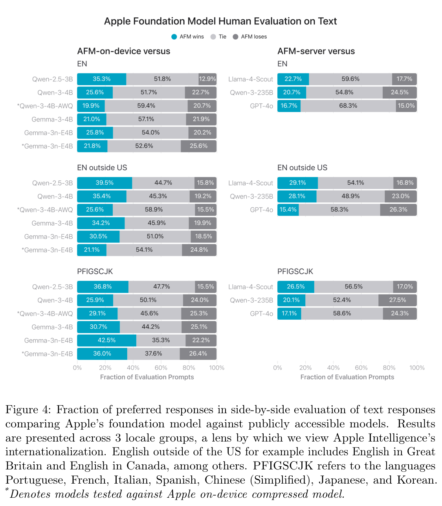
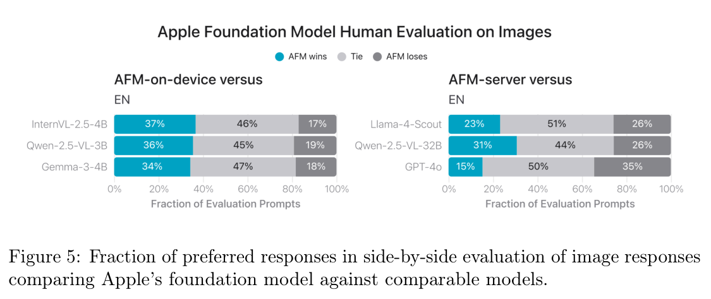

Apple Intelligence 基础语言模型
2025 年技术报告
摘要
我们介绍了两款多语言、多模态基础语言模型，它们为 Apple 设备和服务中的 Apple Intelligence 功能提供支持：（i）一款约 30 亿参数的端侧模型，通过 KV cache 共享和 2-bit 量化感知训练等架构创新，针对 Apple silicon 进行了优化；（ii）一款可扩展的服务器模型，基于新颖的 Parallel-Track Mixture-of-Experts（PT-MoE）transformer，将轨道并行、MoE 稀疏计算以及全局与局部 attention 的交错排列相结合，在 Apple 的 Private Cloud Compute 平台上，以具有竞争力的成本提供高质量表现。两款模型均使用大规模多语言、多模态数据集进行训练，这些数据来自负责任的网页抓取、授权语料和高质量合成数据，之后再通过 SFT 和新的异步平台上的强化学习进一步优化。由此得到的模型支持更多语言，同时能够理解图像并执行工具调用。在公开基准和人工评估中，服务器模型与端侧模型都达到或超过了规模相近的开放基线模型。
新的 Foundation Models 框架以 Swift 为核心，提供引导生成、受约束的工具调用和 LoRA 适配器微调，使开发者只需几行代码就能集成这些能力。Apple Intelligence 模型的最新进展以我们的负责任 AI 方法为基础，配备内容过滤和地区专属评估等防护措施，同时也体现了我们通过 Private Cloud Compute 等创新保护用户隐私的承诺。
1 引言
Apple Intelligence 将强大的生成式 AI 直接集成到用户日常使用的应用与体验中，同时保护用户隐私。在 2025 年全球开发者大会上，我们推出了众多新的 Apple Intelligence 功能，帮助用户沟通、表达自己并实现目标。为了支持这些功能，我们打造了新一代基础语言模型，专门用于增强最新软件版本中的 Apple Intelligence 功能。我们还推出了新的 Foundation Models 框架，使应用开发者能够直接访问 Apple Intelligence 核心的端侧基础语言模型。
我们打造这些生成式模型，是为了支持集成在各个平台上的广泛智能功能。这些模型改进了工具使用和推理能力，能够理解图像与文本输入，速度更快、效率更高，并设计为支持 16 种不同语言。我们最新的基础模型包括一款紧凑的、约 30 亿参数的模型，经过优化，可在 Apple silicon 上高效运行；以及一款采用新颖架构的服务器 MoE 模型，专为 Private Cloud Compute 量身打造 [Apple, 2024]。这两款基础模型属于 Apple 为支持用户而打造的更大生成式模型家族。
在这份概述中，我们详细介绍训练所用的数据、所设计模型的架构、所采用的训练配方、用于优化推理的技术，以及与类似模型相比的评估结果。全文重点说明，我们如何在提升端侧和 Private Cloud Compute 速度与效率的同时，扩展能力、改进质量，让用户受益。最后，为了持续践行我们的核心价值观，我们展示了负责任 AI 原则如何融入整个模型开发过程。

2 模型架构
我们开发了端侧模型和服务器模型，以满足广泛的性能与部署需求。端侧模型针对效率优化，能够以极低的资源占用实现低延迟推理；服务器模型则旨在为更复杂的任务提供高准确率和可扩展性。二者共同构成一套互补的解决方案，可适应多种应用场景。我们首先介绍两款模型的一般解码器架构，然后解释如何通过视觉编码器扩展它们，以支持图像输入。
2.1 端侧模型
我们将以下改进引入端侧模型，显著降低了推理延迟并提升了效率。
KV cache 共享。为了提高端侧架构的效率，我们将完整模型划分为两个块。块 1 包含全部 transformer 层的 62.5%，块 2 包含其余 37.5% 的 transformer 层，但移除了 key 和 value 投影。块 2 的所有 key 和 value cache（KV cache）都直接共享块 1 生成的缓存 [Snowflake, 2025]，使 KV cache 内存占用减少了 37.5%。此外，由于块 2 不生成任何 key 或 value，prefill 阶段能够跳过它的全部计算 [Sun et al., 2024]，将首个 token 生成时间（TTFT）缩短约 37.5%。
2.2 服务器模型
我们还进行了几项重要改动，以提升服务器模型的容量与效率。

Parallel Track（PT）Transformer。我们引入了一种新架构：Parallel Track（PT）Transformer。标准的纯解码器 transformer 由单个顺序堆叠的层栈构成，而 PT-transformer 将模型划分为多个较小的 transformer，称为轨道。每条轨道由多个堆叠的轨道块构成，每个轨道块又是一个 Transformer 层栈。轨道块独立处理 token，只在每个轨道块的输入和输出边界进行跨轨道同步。这种隔离设计使跨轨道并行执行变得直接，并减少了传统 transformer 解码器中的同步开销，例如采用张量并行的解码器所面临的同步开销。我们将这种方法称为轨道并行。它在不损害模型质量的情况下，改善了训练和推理延迟。
Parallel Track Mixture of Experts（PT-MoE）。为了进一步扩展服务器端模型，我们在每个轨道块中引入 MoE 层 [Du et al., 2022; Lepikhin et al., 2021; Shazeer et al., 2017; Zoph et al., 2022]，形成 PT-MoE 架构。由于每个 MoE 层的专家都位于其所属轨道内部，通信开销能够更有效地与计算重叠，从而提升训练效率。结合轨道并行带来的轨道级独立性，这种设计让模型能够高效扩展，并通过提高稀疏性保持较低延迟。
具体而言，我们将每隔一层 transformer 中的稠密前馈网络替换为 MoE 层，通过分组通用矩阵乘法（GEMM）[Gale et al., 2022] 实现 Top-k 路由，确保路由过程中不丢弃任何 token。图 2 展示了 PT-MoE 架构的概况。
交错排列全局与局部 attention 层。我们设计了一种交错 attention 架构，在局部和全局 attention 层之间交替排列，以高效支持长序列 [Beltagy et al., 2020]。每个重复的 transformer 块包含三个局部 attention 层，采用大小为 4096 的滑动窗口和旋转位置 embedding（RoPE），随后是一个不使用位置——
接上页：
embedding 的全局 attention 层（NoPE）[Yang et al., 2025]。在全局 attention 层中省略位置 embedding，可以避免长上下文中的分布外位置问题，从而改善长度泛化。这种交错设计在保持模型质量的同时，大幅减少了长上下文推理的 KV cache 大小。
2.3 视觉编码器
为了提供视觉理解能力，我们引入了视觉编码器，从输入图像中提取视觉特征。视觉编码器使用大量图像数据进行预训练，以提升性能。
视觉编码器包含两个关键组件：视觉骨干网络，用于从输入图像中提取丰富的视觉表示；以及视觉语言适配模块，用于压缩视觉表示，并将这些视觉特征与模型的 token 表示对齐。
视觉骨干网络。对于服务器模型，我们采用标准的 Vision Transformer（ViT-g）[Dosovitskiy et al., 2020]，参数量为 10 亿；对于端侧模型，则采用效率更高的 ViTDet-L 骨干网络 [Li et al., 2022]，参数量为 3 亿。
具体而言，端侧视觉骨干网络采用 ViTDet，它在大多数视觉 transformer 层中使用窗口 attention，仅有三个跨窗口全局 attention 层。为了进一步有效捕捉并整合细粒度局部细节和更广泛的全局上下文信息，我们在标准 ViTDet 中加入了新颖的 Register-Window（RW）机制。这种方法旨在编码一个全局寄存器 token（或类别 token），让它先与图像中的不同局部窗口交互，然后再参与整体全局上下文的聚合。
视觉语言适配模块。视觉语言适配旨在将视觉特征压缩为固定数量的图像 token，并匹配模型的 token 维度。为此，我们结合使用 transformer 层、线性投影层和 \(3\times3\) 卷积层，从而有效捕捉全局和局部视觉信息。线性投影层专门将视觉特征映射到 LLM 解码器的维度。随后，应用平均池化层，将视觉特征进一步压缩为固定数量的图像 token。
3 数据
我们认为，模型应使用多样且高质量的数据进行训练。这包括从出版商处获得授权的数据、从公开可用或开源数据集中整理的数据，以及由我们的网络爬虫 Applebot 抓取的公开可用信息。
训练基础模型时，我们不使用用户的私密个人数据或用户交互。此外，我们采取措施，应用过滤器移除某些类别的个人身份信息，并排除粗俗及不安全内容。
此外，我们继续遵循符合伦理的网页抓取最佳实践，包括遵守广泛采用的 robots.txt 协议，让网站发布者能够选择不允许其内容用于训练 Apple 的生成式基础模型。网站发布者可以细粒度控制 Applebot 能查看哪些页面，以及这些页面如何被使用，同时仍可出现在 Siri 和 Spotlight 的搜索结果中。
3.1 网页数据
在最新版本的模型中，我们对预训练数据流水线进行了几项关键增强：
- 改进网页抓取策略。在尊重上述退出选择的同时，我们继续从 Applebot 抓取的网页内容中获取模型预训练数据的重要部分。这些数据涵盖数千亿个页面，覆盖广泛的语言、地区和主题。鉴于网页数据存在大量噪声，Applebot 采用先进的抓取策略，优先获取高质量且多样的内容。具体而言，我们重点获取高保真 HTML 页面，利用其中的文本和结构化元数据丰富数据集，以便将媒体与周围的文本内容对齐。为了提高相关性和质量，系统利用了多种信号，包括域名级语言识别、主题分布分析和 URL 路径模式启发式规则。
我们尤其重视从文档和现代网站中准确提取内容。我们通过无头渲染增强了文档采集，支持完整页面加载、动态内容交互和 JavaScript 执行，这些能力对于从网页架构中提取数据都至关重要。我们特别关注依赖动态内容和用户交互的网站，实现交互模拟，并从复杂页面中可靠地提取有意义的信息。
- 扩充数据。除了先进的抓取策略，我们还显著扩大了训练数据的规模与多样性。我们纳入了更多高质量的通用领域、数学和编程内容。此外，我们扩展了多语言支持，增加了将在今年晚些时候推出的新语言。
- 增强数据提取流水线。从 HTML 页面中准确提取内容，是确保训练数据高质量的关键。除了完善特定领域的提取策略，我们还将 LLM 引入提取流水线，特别是用于处理领域专属文档。LLM 在识别并分离文档主体内容方面展现出很强的性能，往往超过传统的规则方法。
- 完善数据过滤。高质量过滤对模型整体性能至关重要。在本轮模型迭代中，我们减少了对过于激进的启发式规则的依赖，并引入更多基于模型的过滤技术，以完善数据过滤流水线。我们发现，启发式规则有时会丢弃有价值的高质量 token。通过放宽某些规则并引入来自模型的信号，我们能够保留更多信息丰富的内容，最终得到规模更大、质量更高的预训练数据集。我们通过精心选择训练文档和标签，为每一种支持的语言调优了基于模型的过滤器。
3.2 图像数据
为了增强模型，并为 Apple Intelligence 功能提供视觉理解能力，我们将图像数据引入预训练流水线，结合使用高质量授权数据和公开可用的图像数据。
3.2.1 抓取的图像文本数据
通过网页抓取策略，我们获取了图像及其对应的替代文本。除了合规过滤器，我们还进行了数据质量过滤，包括图像文本对齐过滤。去重后，该流程产生了超过 100 亿对高质量图像文本数据。此外，我们通过保留抓取文档中图像原本所处的文本上下文，创建了图像文本交错数据。经过质量和合规过滤后，得到 1.75 亿篇图像文本交错文档，包含超过 5.5 亿张图像。我们还使用了一个经过过滤的公开图像文本交错数据版本，其中包含 2.94 亿张图像。
3.2.2 合成图像描述数据
由于从网页抓取的图像文本对通常较短，往往无法全面描述图像中的视觉细节，我们使用合成图像描述数据提供更丰富的描述。具体而言，我们开发了内部图像描述模型，能够生成不同细节层次的高质量描述，从关键词列表到段落级全面描述不等。我们生成了超过 50 亿对图像描述数据，并在各个预训练阶段中使用。此外，我们还创建了一批质量特别高、内容全面的合成描述样本：使用目标检测器对感兴趣区域进行分类，单独为这些区域生成描述，再用 LLM 汇总这些单独的子描述及其在原图中的相应空间信息，从而得到更加详细、具有空间感知能力的图像描述，用于后续训练阶段。
3.2.3 富含文本的图像数据
在某些情况下，模型需要理解含有文本的图像，例如帮助用户仅通过将 iPhone 对准传单或印刷广告，就将活动添加到日历中。为了提升模型对富含文本的视觉内容的理解能力，我们通过授权数据、网页抓取和内部合成，整理了多种富含文本的数据集，包括 PDF、文档、手稿、信息图、表格和图表。随后，我们从图像数据中提取文本，并为 Apple Intelligence 支持的各语言生成转写文本及问答对。
3.2.4 高质量领域专属图像文本数据
为了进一步提升模型能力，我们整理了多种类型的图像文本数据：
- 高质量描述数据与带定位信息的描述。我们使用对比语言图像预训练（CLIP）[Radford et al., 2021] 模型和光学字符识别（OCR）工具作为过滤器，从上述合成图像描述数据中获得高质量图像。然后，我们使用内部定位模型，对描述中的名词进行定位，并在名词后附加坐标，形成带定位信息的描述。
- 表格、图表与绘图。对于图表和绘图，我们首先提示内部 LLM 生成合成数据字段及对应数值。然后，要求 LLM 编写代码，基于前面合成的数据样本生成各种类型的图表和绘图。最后，我们将图表、绘图和数据样本输入教师模型，生成用于模型训练的问答。对于表格，我们从公开可用的网站中解析表格，并自动——
接上页“表格、图表与绘图”：
将其转换为 markdown 格式，然后使用图像与 markdown 配对数据，以及教师模型生成的图像与合成问答数据进行模型训练。
- 需要知识的领域。某些图像需要领域专属知识才能理解，例如与科学、医疗及其他专业领域相关的图像。为了整理这些知识密集领域的训练数据，我们首先通过将领域专属关键词与图像的替代文本匹配，从网页抓取数据集中检索相关图像。随后，我们使用 CLIP [Radford et al., 2021] 比较图像特征与类别提示的文本特征，过滤掉视觉内容无关的图像，进一步完善最初的筛选结果。最后，我们使用教师模型根据检索到的图像合成问题与答案，从而生成高质量训练数据。
4 预训练
我们的预训练配方已经演进，以扩展 Apple Intelligence 的能力，支持更多语言及更广泛的功能，包括需要图像理解的功能。
4.1 文本 tokenizer
为了在这一阶段更好地支持新语言，我们将文本 tokenizer 的词表大小从 10 万扩展到 15 万，仅增加 50% 的 token，就为许多额外语言实现了良好的表示质量。
4.2 视觉编码器
视觉编码器的训练分为两个阶段：最初的对比预训练阶段，以及随后与 LLM 解码器联合训练的阶段。在第一阶段，我们应用 CLIP 方法 [Radford et al., 2021]，使用超过 60 亿对图像文本数据预训练视觉骨干网络，其中包括合成描述和替代文本，从而为视觉骨干网络提供可靠的初始化及强大的视觉定位能力。对比预训练使用 \(448\times448\) 分辨率。此外，我们引入 FLIP [Li et al., 2023] 的掩码策略，以提高 ViT-g 的训练效率。在第二阶段，视觉骨干网络与视觉语言适配模块，以及一个参数量为 3.02 亿的紧凑 LLM 解码器联合训练，将图像特征与 LLM 表示空间对齐。CLIP 训练阶段仅使用图像文本配对数据，而在这一阶段，我们加入高质量文本数据、交错图像文本数据和专门的领域专属图像文本数据，丰富训练数据。我们还在这一阶段将图像分辨率提高到 \(672\times672\)，进一步增强视觉编码器捕捉细粒度细节的能力。
4.3 文本预训练
我们使用 AXLearn [Lee et al., 2025] 框架，在 8192 个 v5p Cloud TPU 加速器上训练服务器模型，这些加速器按 \(4\times2048\) 个芯片切片配置。训练结合数据并行、全分片数据并行和新引入的轨道并行，共训练 13.4 万亿个 token，其中只有数据并行跨越切片边界。由于 AXLearn 运行时内置了容错机制，我们整体上维持了 93% 的有效产出，确保训练能够抵御可能发生的硬件或节点中断。
与去年相比，我们对端侧模型训练流水线做了几项修改，以提升训练效率和模型质量。具体而言，我们首先将一个稠密端侧模型训练约 14 万亿个 token，然后仅使用 1 万亿个高质量数据 token，通过 sparse upcycling [Komatsuzaki et al., 2023]，将其转换为一个拥有 64 个专家、每隔一层使用 MoE（即稠密层与稀疏层交错排列）的模型 [Du et al., 2024]。然后，我们利用 MoE 教师提供的蒸馏损失，重新训练稠密端侧模型最后 10% 的 token（约 1.4 万亿个）。这条新流水线不仅将大型蒸馏教师的训练成本降低了 90%，还大幅提高了生成教师 logits 的效率。此外，只重新训练最后 10% 的 token，而非从头训练，也使我们无需进行结构化剪枝。我们发现，这条新训练流水线在显著降低训练成本的同时，提升了预训练端侧模型的性能。
4.4 通过继续预训练扩展能力
我们通过继续预训练阶段，对预训练端侧模型和服务器模型的骨干网络进行适配，以提升视觉理解能力，同时改善代码、数学、多语言和长上下文理解能力。
- 纯文本继续预训练改善了模型在四个关键领域的对齐：数学、代码、知识和多语言。训练数据包含合成数据、我们质量最高的非合成数据，以及一定比例的大规模预训练数据。我们尽可能验证合成训练样本的正确性，以消除幻觉，这些样本包括代码、数学及机器翻译的多语言文档。除了改变数据集，我们还更新了领域混合权重，提高代码、数学和多语言数据的权重。具体而言，我们将多语言数据的总混合权重从 8% 提高到 30%，同时在多语言数据桶内部维持跨语言的温度采样，以平衡低资源语言的欠拟合和过拟合风险。我们发现，这种课程安排为多语言带来的收益，与全程使用固定 30% 权重相同，同时缓解了对英语性能下降的担忧。
- 多模态适配提升了视觉理解能力，同时避免文本性能退化。训练数据由以下部分构成：60% 来自文本继续预训练阶段的高质量文本数据、10% 图像文本交错数据、28.5% 图像文本描述对，以及 1.5% 高质量领域专属图像文本对。该阶段使用文本继续预训练阶段的模型初始化 LLM 解码器，使用图像编码器训练阶段的模型初始化图像 tokenizer，而视觉语言适配模块则从头训练。对于端侧模型，我们为其配备 RW-ViTDet 视觉编码器。每张图像缩放到 \(672\times672\) 像素分辨率，经视觉编码器处理后，由 144 个 token embedding 表示。端侧模型以 16k 序列长度训练了 1.3 万亿个 token。对于服务器模型，我们为其配备 ViT-g 视觉编码器。每张图像缩放到 \(448\times448\) 像素分辨率，经视觉编码器处理后，由 144 个 token 表示。服务器模型以 8k 序列长度训练了 4200 亿个 token。
- 上下文扩展阶段增加了模型能够关注的 token 数量，同时保持其核心能力。我们通过继续使用最长 65K token 的序列训练模型实现这一点。这些更长的序列采样自自然产生的长篇数据——
接上页“上下文扩展阶段”：
例如授权书籍和代码仓库，针对特定能力设计的合成长篇数据，例如上下文学习和检索，以及继续预训练中使用的相同数据。
5 后训练
与预训练类似，我们也调整了后训练流程，以支持语言扩展和视觉理解。虽然 Apple Intelligence 的功能由基础模型之上的适配器提供支持，但我们在实验中发现，改进通用后训练能够提升所有功能的性能，因为模型在全部使用场景中的能力都变得更强。为此，我们扩大了合成数据的使用，并围绕工具使用能力开展了有针对性的质量迭代优化。此外，我们还升级了 RLHF 基础设施与配方，纳入更多样的奖励信号和图像模态。
5.1 监督微调（SFT）
我们将人工编写的示范与合成数据相结合，进一步扩大 SFT 的规模，重点加强核心视觉能力。这包括：
- 通用知识。我们以信息提取和问答的形式，收集跨知识领域的文本及图像数据，确保模型形成强大的文本与多模态理解能力。我们采用基于模型的过滤技术，识别并改进回答质量。
- 推理。我们通过改写大量网页语料、合成回答，再使用执行反馈、真实答案验证和多数投票等准确奖励信号进行过滤，扩充数学与编程推理数据集。对于多模态，我们收集了多个高质量 STEM 数据集，包括小学、初中、高中数学，以及物理和化学，还基于公开可用数据集合成了多个高质量数学数据集。此外，我们通过加入 chain-of-thought（CoT），扩充这些高质量数据集，以支持复杂推理。
- 富含文本的图像理解。我们整理并合成了包含丰富文本信息的图像数据，包括但不限于手写内容、文档、信息图、图表、绘图、表格、化学式和数学表达式。此外，我们加入专门为解析复杂布局结构文档而整理的数据，以增强该数据集。我们还训练了能够理解高分辨率图像的模型，增强其处理这类复杂数据的能力。
- 多语言光学字符识别（OCR）。我们加入了高质量真实世界多语言 OCR 数据，包含印刷文本和手写文本，例如海报、菜单、商店招牌、笔记本等。加入这些数据，是为了支持 Apple Intelligence 将支持的 15 种语言的 OCR。
- 文本与视觉 grounding。我们提高了改写、摘要等任务中 grounding SFT 数据的质量。我们还扩展了视觉 grounding 数据集，使模型具有细粒度图像理解、定位和指代能力。这包括理解视觉——
接上页“文本与视觉 grounding”：
提示，例如以 set-of-mark 和／或文本标注形式提供的点与边界框，并通过将输出文本关联到图像边界框，生成带定位信息的回答。
- 多图像推理。我们通过加入额外的高质量多图像数据，增强了模型的多图像推理能力。
我们进一步通过基于检索的方法，扩展视觉 SFT 数据的多样性。从一小组与图像配对的种子提示出发，我们通过图像搜索流水线检索更多图像，并为这些检索到的图像合成提示及对应回答，构建额外的合成 SFT 数据。为了提高稳健性并减轻幻觉，我们合成了对抗性提示，刻意询问图像中不存在的信息，并配以恰当地拒绝回答的响应。我们通过消融研究平衡各组成部分的混合比例，确保模型有帮助、诚实且负责任。
SFT 中的图像分辨率。在 SFT 期间，我们将图像切分为 \(2\times2\) 网格，把有效分辨率从 \(672\times672\) 像素（视觉骨干网络默认处理的分辨率）提高到 \(1344\times1344\) 像素。模型随后处理共五张图像，即一张全局概览图与四张子图。事实证明，这种方法对于理解高分辨率和富含文本的图像很有效。
为了适应不同的延迟要求，端侧模型可以在三种不同的分辨率模式下运行，并在延迟与质量之间权衡：上述高分辨率模式；均衡模式，仅向模型提供全局概览图；以及快速模式，由视觉骨干网络处理分辨率为 \(224\times224\) 像素的图像。在快速模式中，视觉骨干网络为每张图像仅生成 9 个图像 token，而其他模式生成 144 个。快速模式最适合只需要高层次图像理解的任务。
为了训练不同分辨率模式，我们采用如下方法：对于低分辨率图像，我们以抛硬币的方式决定使用快速模式还是其他模式之一；对于高分辨率图像，我们仅对 1% 的图像使用快速模式。在其余图像中，我们随机选择 20% 使用均衡模式。
5.2 基于人类反馈的强化学习（RLHF）
我们继续将 REINFORCE Leave-One-Out（RLOO）[Ahmadian et al., 2024] 方法作为主要 RLHF 算法，并在端侧模型和服务器模型的 SFT 阶段之后应用 RLHF。
5.2.1 强化学习（RL）基础设施
我们升级了 RL 基础设施，使其更具可扩展性和可扩充性。具体而言，我们构建了分布式异步 RL 基础设施，由多个轨迹生成器（TG）副本和一个策略更新器（PU）组成。TG 使用高效的 LLM 服务引擎，根据 RL 提示数据集进行生成。对于提示和生成的回答，TG 还会计算奖励。我们的基础设施能够灵活利用多样的奖励信号，例如奖励模型、真实答案验证、代码执行、LLM-as-Judge 等。奖励分数既可以由远程服务器（例如奖励模型）计算，也可以通过简单的本地计算获得。在获得回答和奖励后，TG 将生成的轨迹保存到 replay buffer。策略更新器（PU）从 replay——
接上页：
buffer 中加载轨迹，并对模型应用 gradient 更新。PU 定期将模型权重保存到参数服务器；一旦 TG 检测到新的模型权重已保存到参数服务器，就会加载新权重并用它们进行生成。图 3 展示了上述 RL 基础设施。

我们的 RL 基础设施有几个优点。首先，轨迹生成和策略改进可以同时进行，因此计算效率高于在生成与策略更新之间交替进行的同步训练方式。其次，由于 TG 和 PU 位于不同设备上，我们可以分别为它们采用最优的并行方式，并在 TG 上使用 continuous batching 等优化的服务技术。推理资源也可以独立扩展，以提高吞吐量。第三，如上所述，这种设计让我们能够更方便地在 RL 训练中纳入与不同奖励关联的多样提示数据集。在实验中，我们发现，新的 RL 基础设施能够达到与较早版本同步 RL 系统相近的性能，同时少用 37.5% 的设备，并减少 75% 的计算时间。
5.2.2 RLHF 配方
RL 训练会更新模型的全部参数，包括视觉编码器。我们为 RLHF 阶段整理了一组提示数据集及其对应奖励。首先，我们收集大量纯文本和图像文本偏好数据，以训练奖励模型。与前一版模型 [Gunter et al., 2024] 类似，我们使用偏好损失函数，并将单侧评分作为正则项来训练奖励模型。然后，我们在 RLHF 阶段使用以下提示数据类别：
- 纯文本提示，包括多语言数据，奖励来自奖励模型。
- 图像文本提示，奖励来自奖励模型。
- 数学提示，以基于规则的答案验证作为奖励。
- 图像文本 STEM（科学、技术、工程和数学）推理提示，以基于规则的答案验证作为奖励。
使用奖励模型作为奖励来源的数据集，重点改善一般人类偏好，例如指令遵循和有用性；采用基于规则的奖励的数据集，则重点提升数学和视觉推理——
接上页：
能力。在实验中，我们观察到应用 RLHF 阶段后获得了显著收益，尤其体现在人类偏好上。
由于纯文本提示数据集（包括多语言数据）依赖奖励模型提供奖励，奖励模型的准确性对 RLHF 配方的有效性至关重要。我们使用随机抽取的偏好数据样本，分析了人工评分者之间的一致率。分析表明，在约 20–30% 的偏好数据上，人工评分者的偏好不同，这些数据的提示通常具有主观性、难度较高和／或含义晦涩。进一步分析显示，如果人工评分者同样难以评估回答对提示的整体有用性，他们往往也难以就偏好标签达成一致。
我们另外训练了一个仅用于提示选择的奖励模型，并加入额外的输出头，以捕捉偏好数据的一致性。其中，排序一致性定义为：偏好标签是否与根据回答的预测整体有用性推导出的排序一致；整体有用性一致性定义为：整体有用性标签是否与根据预测奖励推导出的整体有用性一致。利用该奖励模型的一致性信号，并通过邻域搜索，我们提出了一种新的提示选择算法，从提示的语义邻域中选择一致性分数最高的提示。与此前用于纯文本模型的纯文本数据集相比，这组包含多语言集合的纯文本提示集，在自动基准和人工基准上都带来了显著提升：自动基准包括 Arena Hard [Li et al., 2024] 提高 4%，AlpacaEval [Dubois et al., 2025] 对 GPT4-Turbo 的胜率提高 7%，Agent Sandbox [Lu et al., 2025] 提高 10%，GPQA [Rein et al., 2023] 提高 7%，Math500 [Lightman et al., 2023] 提高 5%；人工基准则表现为不同地区的整体满意度提升 1.3–2.0%。
5.3 工具使用
工具使用数据的收集面临重大挑战，因为它具有多轮交互特性，并且天然依赖软件（工具）。为了高效收集高质量的工具使用数据，我们设计了如下过程监督标注方法：我们构建了一个工具使用 agent 标注平台，由参考模型和工具执行环境组成。该环境包含经过整理选择的有状态与无状态工具，并以真实的人工编写数据库作为初始状态。标注者首先向平台发出用户查询，触发 agent 模型发起一系列工具调用，直到模型决定向用户作答。平台返回完整轨迹，包括工具调用细节、对应的工具执行响应，以及面向用户的最终回答。平台支持回退到对话历史中的任意轮次，包括重置数据库状态，使标注者能够检查模型预测、纠正错误，并在纠正后继续执行。标注者可以提供后续请求，直到任务完成。最终，标注过程产生一个树状数据集：主干是一条有效的多轮工具使用 SFT 轨迹，被放弃的工具使用尝试则作为分支。
5.4 多语言
我们将语言支持扩展到新的地区和语言，分阶段加入这些语言，以确保高质量，同时避免已支持语言的性能退化。
默认情况下，我们引导模型形成输出语言与输入语言一致的行为。不过，我们也通过创建一个规模较小但多样的混合语言数据集，让提示——
接上页：
和回答可以使用不同语言；该混合语言数据集占多语言 SFT 混合数据的 0.4%。
我们在 SFT 和 RLHF 阶段都引入了多语言数据。每个阶段中，我们按 80:20 的比例采样英语和多语言数据集。两个阶段的数据集都结合使用人工编写数据集与合成数据集。在人工评估中，我们发现 RLHF 相较于 SFT 带来了显著提升，胜负比为 16:9。
为了迭代提升多语言性能，我们采用 Instruction Following Eval（IFEval [Zhou et al., 2023]）和以 GPT4-o 作为评判者的 AlpacaEval。我们为每种支持的语言收集了数百条由母语者编写的提示，因为评分者反映，翻译的提示不够自然。通过提示调优，我们使自动评估与人工评估达到了良好的对齐，从而加快迭代。
6 优化
我们在扩展能力、提升质量的同时，提高了端侧和 Private Cloud Compute（PCC）服务器模型的推理效率，并降低了功耗 [Apple, 2024]。除了上述架构优化，我们还使用量化感知训练（QAT），将端侧模型压缩到每个权重 2 bit，并使用 Adaptive Scalable Texture Compression（ASTC），在训练后将服务器模型压缩到每个权重 3.56 bit。对于两款模型，我们都将 embedding 表量化到每个权重 4 bit：端侧模型在 QAT 期间与基础权重联合训练，PCC 模型则采用训练后量化。我们还将 KV cache 量化到每个权重 8 bit，并引入低秩适配器，恢复压缩造成的质量损失。
量化感知训练（QAT）用于在端侧模型压缩到每个权重 2 bit 后恢复其质量。训练期间，我们通过将权重 \(W\) 的计算修改为如下形式，模拟量化效果：
其中，\(s\) 是缩放因子，\(z\) 是零点，\(q_{\min}\) 和 \(q_{\max}\) 定义量化范围。为了在反向传播中处理不可微的舍入操作，我们使用直通估计器（STE）近似 gradient。
传统量化方案从权重 \(W\) 推导缩放尺度，而我们引入可学习的缩放因子 \(f\)，自适应地微调每个权重张量的量化范围。这个因子缩放张量的绝对最大值，以计算量化尺度：\(s=\frac{f\cdot\max(|W|)}{q_{\max}}\)。在激进的 2-bit 量化下，\(f\) 的初始化对稳定训练至关重要。我们提出了一种受 Newton-Raphson 算法启发的迭代方法，估计截断标量 \(c\)，使其更好地反映权重分布的中心区域，同时减弱 outlier 的影响。每轮迭代中，对高于和低于 \(c\) 的权重重新平衡，以迭代细化估计。收敛后，将缩放因子初始化为：\(f_{\mathrm{init}}=\frac{c}{\max(|W|)}\)。这种初始化使训练动态更稳定，并在实验中加快了 2-bit 模型的收敛。
QAT 遵循与基础模型相同的训练阶段，但迭代次数更少。与全精度训练不同，它对超参数调优更敏感。我们发现 AdamW 优化器 [Kingma and Ba, 2015] 比 Adafactor [Shazeer and Stern, 2018] 更稳定，可能是因为低 bit 场景需要准确的动量估计。使用更低的学习率——
接上页：
以及与神经元数量平方根成反比的 gradient 缩放，也能提升稳定性。此外，我们维护权重 \(W\) 的指数移动平均（EMA）。这种平滑机制过滤了权重轨迹中的噪声波动，使评估表现更稳定，并持续改善 2-bit 模型的指标。与近期研究 [Liu et al., 2025] 一致，我们发现，平衡的 2-bit 集合 \(\{-1.5,-0.5,0.5,1.5\}\) 相较于非平衡集合 \(\{-2,-1,0,1\}\)，能够让训练更加平滑，并减少训练中的 loss spike。我们将权重衰减设为 0，以鼓励模型充分利用量化级别的整个范围，而不是让权重聚集在零点周围。
Adaptive Scalable Texture Compression（ASTC）是一种基于块的有损压缩格式，最初为 GPU 图形流水线中的高效纹理表示而开发 [Nystad et al., 2012]。Apple GPU 内用于 ASTC 解压的固定功能硬件，能够即时解码这些块；从 GPU shader 或计算核心的角度看，其计算成本实际上为零。在神经网络推理中利用这套硬件，可以高效解压模型权重，而不占用通用 GPU 计算资源。
我们在训练后应用 ASTC，压缩服务器模型最终训练得到的权重。具体而言，我们使用 \(6\times6\) 块（即每块 36 个权重），编码为 128-bit ASTC 压缩值。这样得到的存储占用约为每个权重 3.56 bit。我们采用 ASTC 的 HDR-ch 模式，它支持使用非负 16-bit 浮点通道进行更高精度的编码。由于 HDR-ch 模式不允许负值，我们进行一种简单转换：对每个 \(6\times6\) 块，减去该块所有权重中的最小值，确保数据严格非负。这个最小值以一个 float-16 标量的形式单独存储在压缩块旁。推理期间，当块在硬件中解压后，会在使用前将存储的最小值加回解压值。对于最小值平移本身，这种转换是无损的，并确保下游计算的正确性。最小值的加回操作被融合到相应的张量操作中（例如矩阵乘法），确保无需单独的重建步骤，并避免转换带来任何运行时成本。
这种方法显著降低了内存带宽和存储开销，对于频繁访问权重的自回归 decoding 尤其重要。此外，由于解压在硬件中透明进行，提示处理阶段的推理不会因此增加额外延迟。
质量恢复适配器。为了恢复压缩阶段损失的模型质量，我们为两款模型都应用低秩适配（LoRA）适配器，并使用与基础模型训练相同的数据配方，进一步微调这些适配器。这些适配器在每一层中引入少量可训练参数，使模型能够适应基础模型压缩时产生的量化与压缩误差。由于核心模型权重保持冻结，LoRA 参数可以有效补偿有损压缩，而无需重新训练整个模型。对于服务器模型，在进行 ASTC 之前，我们将适配层权重中最重要的奇异向量抽取到 LoRA 适配器中（例如，Meng et al. [2024] 提出了类似方法）。剩余的奇异向量构成残差，并组成基础模型。随后只对基础模型使用 ASTC 压缩。这能降低压缩误差，因为 ASTC 此时只作用于规模更小的奇异向量集合，而最重要的奇异向量在适配器中保持不变。
7 Foundation Models 框架
新的 Foundation Models 框架让开发者能够利用约 30 亿参数的端侧语言模型，开始构建自己的可靠、达到生产质量的生成式 AI 功能。作为 Apple Intelligence 核心的约 30 亿参数基础语言模型，擅长各种文本任务，例如摘要、实体提取、文本理解、润色、简短对话、生成创意内容等。虽然我们针对这些任务专门优化了端侧模型，但它并非被设计为提供通用世界知识的聊天机器人。我们鼓励应用开发者使用这一框架，设计适合其应用的实用功能。
为了提供简单、直观的开发体验，我们框架的一大亮点是采用符合 Swift 习惯、以 Swift 为核心的受约束 decoding 方法，称为引导生成。引导生成减轻了开发者在提示中指定回答格式、手动解析字符串，或处理模型输出格式错误可能性方面的负担。开发者只需为 Swift struct 或 enum 添加 @Generable 宏标注，就能直接生成丰富的 Swift 数据结构。引导生成通过模型、操作系统和开发工具之间的垂直整合实现。它从 Swift 宏开始，将开发者定义的数据结构转换为标准化的回答格式规范。提示模型时，框架将回答格式注入提示；由于模型使用按引导生成规范设计的特殊数据集进行过后训练，因此能够理解并遵循这一格式。接下来，操作系统守护进程采用经过高度优化、相互配合的受约束 decoding 和 speculative decoding 实现，在确保模型输出符合预期格式的同时提升推理速度。基于这些输出，框架能够从模型输出创建 Swift 数据结构实例。这样，应用开发者可以在 Swift 类型系统的支持下编写更加简单的代码，从而简化开发体验。框架的高层抽象也让我们能够灵活地持续改进底层性能与生成质量。使用标准化 schema 表示来支持引导生成和工具调用，意味着我们能够继续针对该格式训练模型，而基于框架构建的应用将受益于这些性能改进。
工具调用让开发者能够自定义约 30 亿参数模型的能力，通过创建工具，为模型提供特定类型的信息来源或服务。框架的工具调用方法建立在引导生成之上，通过防止模型虚构工具名称或参数，保证工具调用结构的正确性。开发者实现简单的 Swift Tool 协议后，框架会自动且以最优方式处理可能复杂的并行与串行工具调用图。在工具使用数据上的模型后训练，提高了模型在这一框架功能中的可靠性。
接下来，框架使用名为 LanguageModelSession 的仅追加、有状态会话，简化对性能和上下文的分析。在底层，这个会话与模型的 key-value（KV）cache 关联。填充 KV cache 可能引入延迟，因此框架的设计会防止开发者无意中使其失效。LanguageModelSession 利用快照这一概念，支持在模型生成内容时，流式输出部分生成结果。框架负责处理解析部分生成输出的复杂任务，开发者看到的只是一个随时间逐渐扩展的 Swift 对象形式的流式输出。
我们精心设计了这一框架，帮助应用开发者充分发挥端侧模型的能力。对于需要教会约 30 亿参数模型全新技能的专业使用场景，我们还提供 Python 工具包，用于训练秩为 32 的 LoRA 适配器，也可选择训练一个草稿模型，用于端侧 speculative——
接上页：
decoding。工具包生成的适配器与 Foundation Models 框架完全兼容。不过，每个适配器只兼容一个特定模型版本，这意味着基础模型每次更新版本，都必须训练新的适配器。因此，应当在充分探索基础模型能力后，再考虑为高级使用场景部署适配器。由于每个适配器都占用较大的存储空间，Foundation Models 框架利用 Background Assets 框架，只下载一个与设备上基础模型版本匹配的适配器。为了通过 Background Assets 托管适配器，开发者可以灵活选择使用自己的服务器或 Apple 的服务器。
除了提供易用、强大的 Swift API，Foundation Models 框架还将工具集成到 Xcode IDE 中。这包括一个使用 Swift 代码进行提示工程的 playground、端侧模型推理性能分析器，以及在 iOS 和 visionOS 模拟器中直接运行模型的能力。更多框架信息请参阅开发者文档。框架对 AI 安全的处理方式将在下文“负责任 AI”一节讨论。
8 评估
在预训练基准上，我们评估了 Massive Multitask Language Understanding（MMLU）、Multilingual Massive Multitask Language Understanding（MMMLU）和 Multilingual Grade School Math（MGSM）的性能，并在表 1 和表 2 中与公开可用的外部模型比较。我们使用这些模型的指令版和非思考版，通过 Simple-Evals 库 [OpenAI, 2025]，仅在 AFM 模型支持的语言上进行评估。我们发现，AFM 端侧模型在 MMLU／MMMLU 上的表现优于 Qwen-2.5-3B、Gemma-3-4B 和 Gemma-3n-E4B，但在 MGSM 上略逊于 Gemma-3n-E4B。AFM 端侧模型的表现低于规模更大的 Qwen-3-4B。AFM 服务器模型略逊于总参数量和激活参数量相近的 LLaMA 4 Scout，而与 Qwen-3-235B 及闭源 GPT-4o 等更大模型的差距更大。

相较于使用 16-bit 权重的模型，我们的模型优化在推理时显著提高了 token 吞吐量、大幅降低了延迟，并显著减少了 DRAM 占用。我们精心定制这些优化，以尽可能保留模型质量。表 3 展示了应用第 6 节所述全部优化技术前后的代表性质量评估，包括量化感知训练（QAT）、ASTC 和质量恢复适配器。
此外，我们使用人工评分者，对端侧和服务器模型进行了离线质量评估。我们沿用标准的基础语言和推理能力进行评估，包括分析推理、头脑风暴、聊天——


接上页评估能力列表：
分类、封闭式问答、编程、创意写作、提取、数学推理、开放式问答、改写、摘要和工具使用。
随着模型支持更多语言和地区，我们扩展了评估任务集，使其针对具体地区。人工评分者评估模型能否生成让当地用户感觉自然的回答。例如，对于来自英国用户的英语体育问题，模型应当知道，相比“soccer”，“football”是更符合当地用法的术语。评分者可以标记模型回答中的多种问题，包括未本地化的术语或不自然的表述。地区专属评估采用与美式英语相似的类别，但数学和编程等与地区无关的领域除外。
我们将模型与公开可用的外部模型比较，包括 Qwen-2.5-3B、Qwen-3-4B、Gemma-3-4B、Gemma-3n、LLaMA 4 Scout、Qwen-3-235B 和 OpenAI 的 GPT-4o。我们发现，端侧模型相较于略大的 Qwen-2.5-3B 和 Gemma-3n 表现良好，与更大的 Qwen-3-4B 和 Gemma-3-4B 相比也具有竞争力；服务器模型相较于总参数量与激活参数量相近的 LLaMA 4 Scout 表现良好，但落后于 Qwen-3-235B 及闭源 GPT-4o 等更大模型。
随着模型支持扩展到图像模态，我们使用图像问题对评估集来评估图像理解能力。该评估集包含与文本评估集相似的类别，以及信息图等图像特有类别，后者要求模型对富含文本的图像进行推理。我们将端侧模型与规模相近的视觉模型比较，包括 InternVL-2.5-4B、Qwen-2.5-VL-3B 和 Gemma-3-4B；将服务器模型与 LLaMA 4 Scout、Qwen-2.5-VL-32B 和 GPT-4o 比较。我们发现，Apple 端侧模型相较于更大的 InternVL 和 Qwen 表现良好，与 Gemma 相比也具有竞争力；服务器模型的表现超过 Qwen-2.5-VL，推理 FLOPs 不到其一半，但落后于更大的 LLaMA 4 Scout 和 GPT-4o。


由于这些模型的开发目标是提供广泛功能，帮助用户完成各种日常任务，因此除了基础模型评估之外，我们还对每项具体——
接上页：
功能进行详细评估。例如，考虑视觉智能功能，它能够根据传单图像创建日历活动。我们在广泛的环境条件、拍摄角度及其他困难情形下，收集了一组传单作为评估集。该评估集用于衡量模型能否从传单中准确提取日期、地点等信息，并正确创建日历活动。
9 负责任 AI
Apple Intelligence 的每个环节都以我们的核心价值观为指导，并建立在突破性隐私创新的基础上。在开发和推进 Apple Intelligence 的每个阶段，我们都使用负责任 AI 原则指导功能和模型：
- 用智能工具赋能用户：我们寻找能够负责任地使用 AI 的领域，创造工具，满足具体用户需求。我们尊重用户选择如何使用这些工具来实现目标。
- 代表我们的用户：我们构建深度个性化的产品，旨在真实地代表全球用户。我们持续努力，避免 AI 工具和模型延续刻板印象与系统性偏见。
- 审慎设计：我们在流程的每个阶段采取预防措施，包括设计、模型训练、功能开发和质量评估，以识别 AI 工具可能被滥用或导致潜在伤害的方式。我们将借助用户反馈，持续监控并主动改进 AI 工具。
- 保护隐私：我们利用强大的端侧处理，以及 Private Cloud Compute 等突破性基础设施，保护用户隐私。训练基础模型时，我们不使用用户的私密个人数据或用户交互。
这些原则在整个产品开发周期中指导我们的工作，为产品设计、政策、评估和缓解措施提供依据。作为 Apple 践行负责任 AI 承诺的一部分，我们持续识别并缓解基础模型使用中固有的风险，例如幻觉和易受提示注入攻击的风险。我们的安全分类体系帮助我们识别应当谨慎处理的敏感内容。该分类体系基于持续的风险评估、模型能力，以及内部和外部人工评估定期更新。目前包含 6 个类别和 58 个子类别，涵盖侮辱性用语与仇恨言论／符号、争议性和敏感话题，以及算法偏见和刻板印象等领域。
为了评估 Apple Intelligence 的安全性，我们在部署前评估基础模型，以及每项使用模型的功能。对于基础模型，我们将内部和外部人工评估与自动评分结合，并通过与外部模型比较进行基准评测。我们构建了有针对性的安全评估数据集，评估基础模型在涉及高风险和敏感内容的摘要、问答及头脑风暴等任务上的表现。对于单项功能，我们设计了关注用户面临风险的数据集，专门识别不希望出现或非预期的结果。我们还考察质量方面潜在不足，在应用于敏感的应用专属内容时，可能如何加剧风险。例如，我们在设计新的 Foundation Models 框架及配套资源时十分谨慎，以帮助改善——
接上页：
应用中的生成式 AI 安全。框架通过内置安全防护措施，抑制有害的模型输入和输出，保障基本安全水平。为了帮助应用设计者和开发者纳入适合其应用的 AI 安全措施，我们创建了教育资源，例如面向负责任 AI 原则的新《生成式 AI 人机界面指南》。
随着功能扩展到新语言，我们扩大了安全工作的地区与文化覆盖范围，并持续改进，以适应用户广泛的文化和语言多样性。除了遵守当地法律法规，我们还结合使用高质量、有代表性的外部数据来源，与内部和外部法律、语言及文化专家合作，并审查此前产品决策的先例，确保我们的方法尊重具体语境且符合实际情况。为了设计面向多语言使用的缓解步骤，我们首先在基础模型层面进行多语言后训练对齐，然后扩展到集成安全对齐数据的功能专属适配器。此外，我们使用语言专属训练数据，扩展了用于拦截有害提示的防护模型，同时维持一个多语言适配器。我们开发定制数据集，缓解模型输出中的文化特有风险、偏见和刻板印象。同样，我们借助机器翻译和定向合成数据生成等工具，将评估数据集扩展到不同语言和地区，并由母语者完善所有数据。最后，我们对各项功能开展人工红队测试，识别每个地区独有的风险。虽然我们努力在后续基础模型版本中缓解新发现的风险，但也可能将相关术语加入覆盖规则列表，进行特殊处理，以防止有害输出；例如，提示中的侮辱性用语可能触发写作工具的警告，或阻止生成 Genmoji。
我们借助用户提交的反馈，持续监控并主动改进功能。用户反馈是我们负责任 AI 方法的重要组成部分。例如，在 Image Playground 中，用户可以点击“赞”或“踩”，对生成的图像提供反馈，也可以添加评论。应用开发者同样可以通过 Feedback Assistant 提供反馈。来自用户和开发者的反馈，以及评估数据和其他指标，帮助我们持续改善 Apple Intelligence 功能与模型。
10 结论
我们很高兴能够让 Apple Intelligence 核心的基础语言模型更高效、更强大，解锁广泛的实用功能，集成到各个软件平台，并以多种语言提供给全球用户。我们还通过新的 Foundation Models 框架，让应用开发者直接访问端侧基础语言模型。应用开发者只需几行代码，就能使用免费的 AI 推理，将文本提取、摘要等能力带入自己的应用。Apple Intelligence 模型的最新进展继续以我们的核心价值观为基础，例如对隐私的承诺，以及负责任 AI 方法。
参考文献
Arash Ahmadian, Chris Cremer, Matthias Gallé, Marzieh Fadaee, Julia Kreutzer, Ahmet Üstün, and Sara Hooker. 回归基础：重新审视用于 LLM 人类反馈学习的 REINFORCE 风格优化。2024。
参考文献（续）
Apple. Private Cloud Compute：云端 AI 隐私的新前沿。https://security.apple.com/blog/private-cloud-compute/，2024。访问日期：2025-07-01。
Iz Beltagy, Matthew E. Peters, and Arman Cohan. Longformer：长文档 transformer，2020。URL https://arxiv.org/abs/2004.05150。
Alexey Dosovitskiy, Lucas Beyer, Alexander Kolesnikov, Dirk Weissenborn, Xiaohua Zhai, Thomas Unterthiner, Mostafa Dehghani, Matthias Minderer, Georg Heigold, Sylvain Gelly, et al. 一张图像相当于 16×16 个词：用于大规模图像识别的 Transformer。arXiv 预印本 arXiv:2010.11929，2020。
Nan Du, Yanping Huang, Andrew M. Dai, Simon Tong, Dmitry Lepikhin, Yuanzhong Xu, Maxim Krikun, Yanqi Zhou, Adams Wei Yu, Orhan Firat, Barret Zoph, Liam Fedus, Maarten Bosma, Zongwei Zhou, Tao Wang, Yu Emma Wang, Kellie Webster, Marie Pellat, Kevin Robinson, Kathleen Meier-Hellstern, Toju Duke, Lucas Dixon, Kun Zhang, Quoc V Le, Yonghui Wu, Zhifeng Chen, and Claire Cui. GLaM：利用 MoE 高效扩展语言模型。2022。URL https://arxiv.org/abs/2112.06905。
Xianzhi Du, Tom Gunter, Xiang Kong, Mark Lee, Zirui Wang, Aonan Zhang, Nan Du, and Ruoming Pang. 重新审视 LLM 训练中 MoE 与稠密模型的速度和准确率比较，2024。URL https://arxiv.org/pdf/2405.15052。
Yann Dubois, Balázs Galambosi, Percy Liang, and Tatsunori B. Hashimoto. 长度受控的 AlpacaEval：消除自动评估器偏差的简单方法，2025。URL https://arxiv.org/abs/2404.04475。
Trevor Gale, Deepak Narayanan, Cliff Young, and Matei Zaharia. MegaBlocks：利用 MoE 进行高效稀疏训练。2022。URL https://arxiv.org/abs/2211.15841。
Tom Gunter, Zirui Wang, Chong Wang, Ruoming Pang, Andy Narayanan, Aonan Zhang, Bowen Zhang, Chen Chen, Chung-Cheng Chiu, David Qiu, et al. Apple Intelligence 基础语言模型。arXiv 预印本 arXiv:2407.21075，2024。
Diederik P. Kingma and Jimmy Ba. Adam：一种随机优化方法。载于 Yoshua Bengio and Yann LeCun（编），第 3 届 International Conference on Learning Representations，ICLR 2015，美国加利福尼亚州圣迭戈，2015 年 5 月 7–9 日，会议论文集，2015。URL http://arxiv.org/abs/1412.6980。
Aran Komatsuzaki, Joan Puigcerver, James Lee-Thorp, Carlos Riquelme Ruiz, Basil Mustafa, Joshua Ainslie, Yi Tay, Mostafa Dehghani, and Neil Houlsby. Sparse upcycling：从稠密 checkpoint 训练 MoE。载于第 11 届 International Conference on Learning Representations，2023。URL https://openreview.net/forum?id=T5nUQDrM4u。
Mark Lee, Tom Gunter, Chang Lan, John Peebles, Hanzhi Zhou, Kelvin Zou, Sneha Bangalore, Chung-Cheng Chiu, Nan Du, Xianzhi Du, Philipp Dufter, Ruixuan Hou, Haoshuo Huang, Dongseong Hwang, Xiang Kong, Jinhao Lei, Tao Lei, Meng Li, Li Li, Jiarui Lu, Zhiyun Lu, Yiping Ma, David Qiu, Vivek Rathod, Senyu Tong, Zhucheng Tu, Jianyu Wang, Yongqiang Wang, Zirui Wang, Floris Weers, Sam Wiseman, Guoli Yin, Bowen Zhang, Xiyou Zhou, Danyang Zhuo, Cheng Leong, and Ruoming Pang. AXLearn：在异构基础设施上进行模块化大模型训练，2025。URL https://arxiv.org/abs/2507.05411。
参考文献（续）
Dmitry Lepikhin, HyoukJoong Lee, Yuanzhong Xu, Dehao Chen, Orhan Firat, Yanping Huang, Maxim Krikun, Noam Shazeer, and Zhifeng Chen. GShard：通过条件计算与自动分片扩展超大模型。2021。URL https://openreview.net/forum?id=qrwe7XHTmYb。
Tianle Li, Wei-Lin Chiang, Evan Frick, Lisa Dunlap, Tianhao Wu, Banghua Zhu, Joseph E. Gonzalez, and Ion Stoica. 从众包数据到高质量基准：Arena-Hard 与 BenchBuilder 流水线，2024。URL https://arxiv.org/abs/2406.11939。
Yanghao Li, Hanzi Mao, Ross Girshick, and Kaiming He. 探索用于目标检测的普通视觉 transformer 骨干网络。载于 European Conference on Computer Vision，第 280–296 页。Springer，2022。
Yanghao Li, Haoqi Fan, Ronghang Hu, Christoph Feichtenhofer, and Kaiming He. 通过掩码扩展语言图像预训练。载于 IEEE/CVF Conference on Computer Vision and Pattern Recognition 论文集，第 23390–23400 页，2023。
Hunter Lightman, Vineet Kosaraju, Yura Burda, Harri Edwards, Bowen Baker, Teddy Lee, Jan Leike, John Schulman, Ilya Sutskever, and Karl Cobbe. 让我们逐步验证。arXiv 预印本 arXiv:2305.20050，2023。
Zechun Liu, Changsheng Zhao, Hanxian Huang, Sijia Chen, Jing Zhang, Jiawei Zhao, Scott Roy, Lisa Jin, Yunyang Xiong, Yangyang Shi, Lin Xiao, Yuandong Tian, Bilge Soran, Raghuraman Krishnamoorthi, Tijmen Blankevoort, and Vikas Chandra. ParetoQ：极低 bit LLM 量化中的 scaling laws。CoRR，abs/2502.02631，2025。doi: 10.48550/ARXIV.2502.02631。URL https://doi.org/10.48550/arXiv.2502.02631。
Jiarui Lu, Thomas Holleis, Yizhe Zhang, Bernhard Aumayer, Feng Nan, Felix Bai, Shuang Ma, Shen Ma, Mengyu Li, Guoli Yin, Zirui Wang, and Ruoming Pang. ToolSandbox：用于评估 LLM 工具使用能力的有状态、对话式、交互式基准，2025。URL https://arxiv.org/abs/2408.04682。
Fanxu Meng, Zhaohui Wang, and Muhan Zhang. PiSSA：大语言模型的主奇异值与奇异向量适配。Advances in Neural Information Processing Systems，37:121038–121072，2024。
Jörn Nystad, Anders Lassen, Andy Pomianowski, Sean Ellis, and Tom Olson. 自适应可扩展纹理压缩。载于第 4 届 ACM SIGGRAPH/Eurographics Conference on High-Performance Graphics 论文集，第 105–114 页，2012。
OpenAI. simple-evals：用于评估语言模型的轻量库。https://github.com/openai/simple-evals，2025。访问日期：2025-07-13。
Alec Radford, Jong Wook Kim, Chris Hallacy, Aditya Ramesh, Gabriel Goh, Sandhini Agarwal, Girish Sastry, Amanda Askell, Pamela Mishkin, Jack Clark, et al. 从自然语言监督中学习可迁移的视觉模型。载于 International Conference on Machine Learning，第 8748–8763 页。PmLR，2021。
David Rein, Betty Li Hou, Asa Cooper Stickland, Jackson Petty, Richard Yuanzhe Pang, Julien Dirani, Julian Michael, and Samuel R. Bowman. GPQA：研究生级别、无法通过 Google 搜索轻易解答的问答基准，2023。URL https://arxiv.org/abs/2311.12022。
参考文献（续）
Noam Shazeer and Mitchell Stern. Adafactor：以次线性内存成本实现自适应学习率。载于 Jennifer G. Dy and Andreas Krause（编），第 35 届 International Conference on Machine Learning 论文集，ICML 2018，瑞典斯德哥尔摩 Stockholmsmässan，2018 年 7 月 10–15 日，Proceedings of Machine Learning Research 第 80 卷，第 4603–4611 页。PMLR，2018。URL http://proceedings.mlr.press/v80/shazeer18a.html。
Noam Shazeer, Azalia Mirhoseini, Krzysztof Maziarz, Andy Davis, Quoc Le, Geoffrey Hinton, and Jeff Dean. 超大规模神经网络：稀疏门控 MoE 层。2017。URL https://arxiv.org/abs/1701.06538。
Snowflake. SwiftKV：通过保留知识的计算削减加速企业 LLM 工作负载。https://www.snowflake.com/en/engineering-blog/swiftkv-llm-compute-reduction/，2025。访问日期：2025-07-16。
Yutao Sun, Li Dong, Yi Zhu, Shaohan Huang, Wenhui Wang, Shuming Ma, Quanlu Zhang, Jianyong Wang, and Furu Wei. 只缓存一次：用于语言模型的解码器–解码器架构。Advances in Neural Information Processing Systems，37:7339–7361，2024。
Bowen Yang, Bharat Venkitesh, Dwarak Talupuru, Hangyu Lin, David Cairuz, Phil Blunsom, and Acyr Locatelli. 从 RoPE 到 NoPE 再返回：一种新的混合 attention 策略，2025。URL https://arxiv.org/abs/2501.18795。
Jeffrey Zhou, Tianjian Lu, Swaroop Mishra, Siddhartha Brahma, Sujoy Basu, Yi Luan, Denny Zhou, and Le Hou. 大语言模型的指令遵循评估。2023。
Barret Zoph, Irwan Bello, Sameer Kumar, Nan Du, Yanping Huang, Jeff Dean, Noam Shazeer, and William Fedus. ST-MoE：设计稳定且可迁移的稀疏专家模型。2022。URL https://arxiv.org/abs/2202.08906。
贡献者
我们感谢以下贡献者为本项目所做的工作：（随机顺序）
| Ethan Li | George Horrell |
| Anders Boesen Lindbo Larsen | Sam Dodge |
| Chen Zhang | Lindsay Hislop |
| Xiyou Zhou | Sumeet Singh |
| Jun Qin | Alex Dombrowski |
| Dian Ang Yap | Aiswarya Raghavan |
| Narendran Raghavan | Sasha Sirovica |
| Xuankai Chang | Mandana Saebi |
| Margit Bowler | Faye Lao |
| Eray Yildiz | Max Lam |
| John Peebles | TJ Lu |
| Hannah Gillis Coleman | Zhaoyang Xu |
| Matteo Ronchi | Karanjeet Singh |
| Peter Gray | Marc Kirchner |
| Keen You | David Mizrahi |
| Anthony Spalvieri-Kruse | Rajat Arora |
| Ruoming Pang | Haotian Zhang |
| Reed Li | Henry Mason |
| Yuli Yang | Lawrence Zhou |
| Emad Soroush | Yi Hua |
| Zhiyun Lu | Ankur Jain |
| Crystal Xiao | Felix Bai |
| Rong Situ | Joseph Astrauskas |
| Jordan Huffaker | Floris Weers |
| David Griffiths | Josh Gardner |
| Zaid Ahmed | Mira Chiang |
| Peng Zhang | Yi Zhang |
| Daniel Parilla | Pulkit Agrawal |
| Asaf Liberman | Tony Sun |
| Jennifer Mallalieu | Quentin Keunebroek |
| Parsa Mazaheri | Matthew Hopkins |
| Qibin Chen | Bugu Wu |
| Manjot Bilkhu | Tao Jia |
| Aonan Zhang | Chen Chen |
| Eric Wang | Xingyu Zhou |
| Dave Nelson | Nanzhu Wang |
| Michael FitzMaurice | Peng Liu |
| Thomas Voice | Ruixuan Hou |
| Jeremy Liu | Rene Rauch |
| Josh Shaffer | Yuan Gao |
| Shiwen Zhao | Afshin Dehghan |
| Prasanth Yadla | Jonathan Janke |
| Farzin Rasteh | Zirui Wang |
| Pengsheng Guo | Cha Chen |
| Arsalan Farooq | Xiaoyi Ren |
| Jeremy Snow | Feng Nan |
| Stephen Murphy | Josh Elman |
| Tao Lei | Dong Yin |
| Minsik Cho | Yusuf Goren |
贡献者（续）
| Jeff Lai | Matthias Paulik |
| Yiran Fei | Adolfo Lopez Mendez |
| Syd Evans | Zhen Li |
| Muyang Yu | Hong-You Chen |
| Guoli Yin | Chao Jia |
| Yi Qin | Dhaval Doshi |
| Erin Feldman | Zhengdong Zhang |
| Isha Garg | Raunak Manjani |
| Aparna Rajamani | Aaron Franklin |
| Karla Vega | Zhile Ren |
| Walker Cheng | David Chen |
| TJ Collins | Artsiom Peshko |
| Hans Han | Nandhitha Raghuram |
| Raul Rea Menacho | Hans Hao |
| Simon Yeung | Jiulong Shan |
| Sophy Lee | Kavya Nerella |
| Phani Mutyala | Ramsey Tantawi |
| Ying-Chang Cheng | Vivek Kumar |
| Zhe Gan | Saiwen Wang |
| Sprite Chu | Brycen Wershing |
| Justin Lazarow | Bhuwan Dhingra |
| Alessandro Pappalardo | Dhruti Shah |
| Federico Scozzafava | Ob Adaranijo |
| Jing Lu | Xin Zheng |
| Erik Daxberger | Tait Madsen |
| Laurent Duchesne | Hadas Kotek |
| Jen Liu | Chang Liu |
| David Güera | Yin Xia |
| Stefano Ligas | Hanli Li |
| Mary Beth Kery | Suma Jayaram |
| Brent Ramerth | Yanchao Sun |
| Ciro Sannino | Ahmed Fakhry |
| Marcin Eichner | Vasileios Saveris |
| Haoshuo Huang | Dustin Withers |
| Rui Qian | Yanghao Li |
| Moritz Schwarzer-Becker | Alp Aygar |
| David Riazati | Andres Romero Mier Y Teran |
| Mingfei Gao | Kaiwei Huang |
| Bailin Wang | Mark Lee |
| Jack Cackler | Xiujun Li |
| Yang Lu | Yuhong Li |
| Ransen Niu | Tyler Johnson |
| John Dennison | Jay Tang |
| Guillaume Klein | Joseph Yitan Cheng |
| Jeffrey Bigham | Futang Peng |
| Deepak Gopinath | Andrew Walkingshaw |
| Navid Shiee | Lucas Guibert |
| Darren Botten | Abhishek Sharma |
| Guillaume Tartavel | Cheng Shen |
| Alex Guillen Garcia | Piotr Maj |
| Sam Xu | Yasutaka Tanaka |
| Victoria MönchJuan Haladjian | You-Cyuan Jhang |
| Zi-Yi Dou | Vivian Ma |
贡献者（续）
| Tommi Vehvilainen | Alex Braunstein |
| Kelvin Zou | Daniele Molinari |
| Jeff Nichols | Richard Wei |
| Matthew Lei | Brenda Yang |
| David Qiu | Nicholas Lusskin |
| Yihao Qian | Joanna Arreaza-Taylor |
| Gokul Santhanam | Meng Cao |
| Wentao Wu | Nicholas Seidl |
| Yena Han | Simon Wang |
| Dominik Moritz | Jiaming Hu |
| Haijing Fu | Yiping Ma |
| Mingze Xu | Mengyu Li |
| Vivek Rathod | Kieran Liu |
| Jian Liu | Hang Su |
| Louis D’hauwe | Sachin Ravi |
| Qin Ba | Chong Wang |
| Haitian Sun | Xin Wang |
| Haoran Yan | Kevin Smith |
| Philipp Dufter | Haoxuan You |
| Anh Nguyen | Binazir Karimzadeh |
| Yihao Feng | Rui Li |
| Emma Wang | Jinhao Lei |
| Keyu He | Wei Fang |
| Rahul Nair | Alec Doane |
| Sanskruti Shah | Sam Wiseman |
| Jiarui Lu | Ismael Fernandez |
| Patrick Sonnenberg | Jane Li |
| Jeremy Warner | Andrew Hansen |
| Yuanzhi Li | Javier Movellan |
| Bowen Pan | Christopher Neubauer |
| Ziyi Zhong | Hanzhi Zhou |
| Joe Zhou | Chris Chaney |
| Sam Davarnia | Nazir Kamaldin |
| Olli Saarikivi | Valentin Wolf |
| Irina Belousova | Fernando Bermúdez-Medina |
| Rachel Burger | Joris Pelemans |
| Shang-Chen Wu | Peter Fu |
| Di Feng | Howard Xing |
| Bas Straathof | Xiang Kong |
| James Chou | Wayne Shan |
| Yuanyang Zhang | Gabriel Jacoby-Cooper |
| Marco Zuliani | Dongcai Shen |
| Eduardo Jimenez | Tom Gunter |
| Abhishek Sundararajan | Guillaume Seguin |
| Xianzhi Du | Fangping Shi |
| Chang Lan | Shiyu Li |
| Nilesh Shahdadpuri | Yang Xu |
| Peter Grasch | Areeba Kamal |
| Sergiu Sima | Dan Masi |
| Josh Newnham | Saptarshi Guha |
| Varsha Paidi | Qi Zhu |
| Jianyu Wang | Jenna Thibodeau |
| Kaelen Haag | Changyuan Zhang |
贡献者（续）
| Rebecca Callahan | Sai Aitharaju |
| Charles Maalouf | Fred Hohman |
| Wilson Tsao | Lauren Gardiner |
| Boyue Li | Chung-Cheng Chiu |
| Qingqing Cao | Yinfei Yang |
| Naomy Sabo | Alper Kokmen |
| Cheng Leong | Frank Chu |
| Yi Wang | Ke Ye |
| Anupama Mann Anupama | Kaan Elgin |
| Colorado Reed | Oron Levy |
| Kenneth Jung | John Park |
| Zhifeng Chen | Donald Zhang |
| Mohana Prasad Sathya Moorthy | Eldon Schoop |
| Yifei He | Nina Wenzel |
| Erik Hornberger | Michael Booker |
| Devi Krishna | Hyunjik Kim |
| Senyu Tong | Chinguun Erdenebileg |
| Michael (Taoyi) Lee | Nan Dun |
| David Haldimann | Eric Liang Yang |
| Yang Zhao | Priyal Chhatrapati |
| Bowen Zhang | Vishaal Mahtani |
| Chang Gao | Haiming Gang |
| Chris Bartels | Kohen Chia |
| Sushma Rao | Deepa Seshadri |
| Nathalie Tran | Donghan Yu |
| Simon Lehnerer | Yan Meng |
| Co Giang | Kelsey Peterson |
| Patrick Dong | Zhen Yang |
| Junting Pan | Yongqiang Wang |
| Biyao Wang | Carina Peng |
| Dongxu Li | Doug Kang |
| Mehrdad Farajtabar | Anuva Agarwal |
| Dongseong Hwang | Albert Antony |
| Grace Duanmu | Juan Lao Tebar |
| Eshan Verma | Albin Madappally Jose |
| Sujeeth Reddy | Regan Poston |
| Qi Shan | Andy De Wang |
| Hongbin Gao | Gerard Casamayor |
| Nan Du | Elmira Amirloo |
| Pragnya Sridhar | Violet Yao |
| Forrest Huang | Wojciech Kryscinski |
| Yingbo Wang | Kun Duan |
| Nikhil Bhendawade | Lezhi Li |
| Diane Zhu |